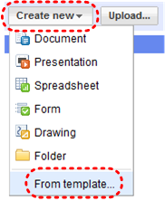
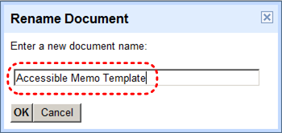
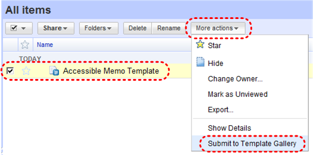
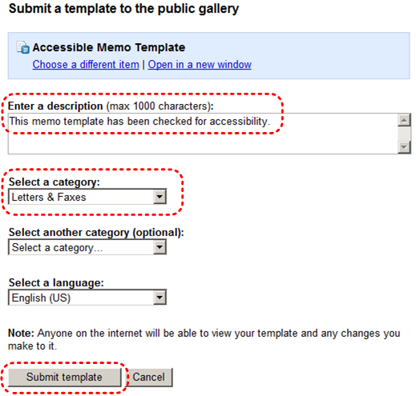
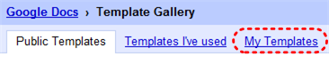
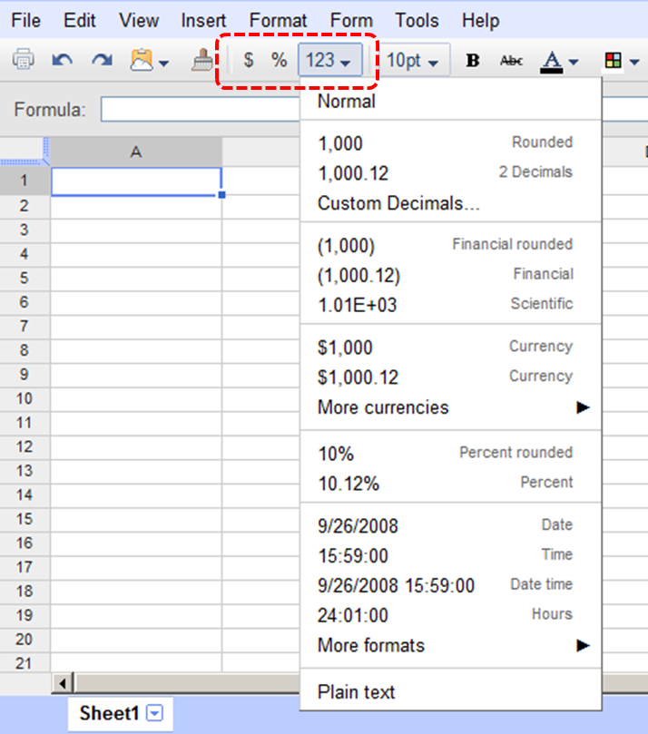
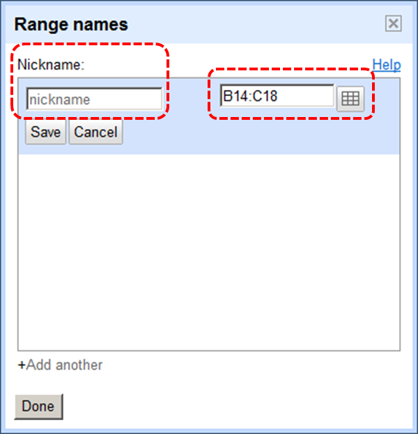

Authoring Techniques for Accessible Office Documents: Google docs: Spreadsheet
Date of Current Version: 04 Feb 2011
Latest Version (HTML): http://inclusivedesign.ca/accessible-office-documents/googlespreadsheet
Quick Reference
- Usage Notes
- Technique 1. Use Accessible Templates
- Technique 2. Set Document Language
- Technique 3. Provide Text Alternatives for Images and Graphical Objects
- Technique 4. Format Your Cells
- Technique 5. Use Cell Addressing
- Technique 6. Create Accessible Charts
- Technique 7. Provide Structure for Tables
- Technique 8. Use Other Content Structuring Features
- Technique 9. Make Content Easier to See
- Technique 10. Make Content Easier to Understand
- Technique 11. Check Accessibility
- Technique 12. Use Accessibility Features when Saving/Exporting to Other Formats
- Technique 13. Consider Using Accessibility Support Applications/Plugins
- Accessibility Help
- References and Resources
- Acknowledgments
Usage Notes
At the time of testing (September 20, 2010), Google docs: Spreadsheet lacks several features that enable accessible office document authoring, most notably: the ability to add alternative text to images and objects, the ability to indicate changes in natural language, programmatically determined named styles, the ability to anchor floating images and objects, and a separate document title field. As a result, some of the other features that might otherwise support accessibility, such as its extensive templates are not as effective. In addition, Google docs: Spreadsheet does not include an accessibility checking feature.
What’s an “Office Document”?
You should use these techniques when you are using Google docs: Spreadsheet to create documents that are:
- Intended to be used by people (i.e., not computer code),
- Text-based (i.e., not simply images, although they may contain images),
- Fully printable (i.e., where dynamic features are limited to automatic page numbering, table of contents, etc. and do not include audio, video, or embedded interactivity),
- Self-contained (i.e., without hyperlinks to other documents, unlike web content), and
- Typical of office-style workflows (Reports, letters, memos, budgets, presentations, etc.).
If you are creating forms, web pages, applications, or other dynamic and/or interactive content, these techniques will still be useful to you, but you should also consult the W3C-WAI Web Content Accessibility Guidelines (WCAG 2.0) because these are specifically designed to provide guidance for highly dynamic and/or interactive content.
File Formats
Google docs: Spreadsheet does not have a default file format, as it is a web-based authoring tool.
Google docs: Spreadsheet offers various spreadsheet processor and web format saving options. Most of these have not been checked for accessibility, but some information and/or instructions are available for the following formats in Technique 12:
- MS Excel
- HTML
Document Conventions
We have tried to formulate these techniques so that they are useful to all authors, regardless of whether they use a mouse. However, for clarity there are several instances where mouse-only language is used. Below are the mouse-only terms and their keyboard alternatives:
- *Right-click: To right-click with the keyboard, select the object using the Shift+Arrow keys and then press either (1) the “Right-Click” key (some keyboard have this to the right of the spacebar) or Shift+F10.
Disclaimer and Testing Details:
Following these techniques will increase the accessibility of your documents, but it does not guarantee accessibility to any specific disability groups . In cases where more certainty is required, it is recommended that you test the office documents with end users with disabilities, including screen reader users.
The application-specific steps and screenshots in this document were created using Google docs: Spreadsheet (ver.30 09 2010, Internet Explorer ver.7.0.6001/Windows XP, Sept. 2010) while producing files in proprietary format. Files are also easily saved as other file formats (see Technique 12).
Technique 1. Use Accessible Templates
At this time, Google doc’s extensive collection of templates should be treated cautiously. The fact that the Google docs: Spreadsheet editor lacks support for accessibility features such as alternative text and named styles also means that the templates created with the editor are also lacking in these areas. [Tested: August 20, 2010]
All office documents start with a template, which can be as simple as a blank standard-sized page or as complex as a nearly complete document with text, graphics and other content. For example, a “Meeting Minutes” template might include headings for information relevant to a business meeting, such as “Actions” above a table with rows to denote time and columns for actions of the meeting.
Because templates provide the starting-point for so many documents, accessibility is critical. If you are unsure whether a template is accessible, you should check a sample document produced when the template is used (see Technique 11).
Google docs: Spreadsheet’s default template for new documents is a blank spreadsheet. The basic installation also includes a wide variety of templates ranging from blank service invoices to blank project management schedules. These are all accessible by virtue of being blank.
It is possible to create your own templates from scratch in Google docs: Spreadsheet. As well, you can edit and modify the existing templates, ensuring their accessibility as you do so and saving them as a new template.
To select a template
- Go to menu item: Create New > From Template

- Browse templates by category or enter terms in the search box and click Search Templates
Note: to return to an unfiltered view after performing a search, click Clear Search
To create an accessible template
- Create a new document (from the default template or from an existing template)
- Ensure that you follow techniques in this document. You may also check the accessibility (see Technique 11).
- Save your template by clicking Save now
- Click on the Untitled Document box
- Fill in a new document name in the Rename Document dialog that appears. Be sure to indicate that the document is an accessible template by using terms such as “accessible” (e.g., “Accessible Memo Template”). This will improve its searchability as an accessible template.

- Select the check box next to your document in the All items list
- Go to menu item: More actions > Submit to Template Gallery

- Enter a description indicating that this is an accessible template (e.g. This memo template has been checked for accessibility)
- Select one or two relevant categories and select the language of the template
- Click Submit template

To submit an accessible template from the Template Gallery main page
- Click Submit a template
- Click Choose from your Google docs
- Select template from your Google docs
- Enter a description indicating that this is an accessible template (e.g. This memo template has been checked for accessibility)
- Select one or two relevant categories and select the language of the template
- Click Submit template
To select an accessible template that you submitted
Note: Only use these steps if you have an accessible template available (e.g. that you previously saved). Otherwise, simply open a new (blank) document.
- Select Browse template gallery
- Select the My Templates tab

- Select your accessible template from the list
Note: your file name and description should help you locate the accessible templates.
To select an accessible template from the public gallery
- Enter terms in the search box that will help you locate accessible templates
- Select Search Templates
Note: files names and descriptions should indicate which templates are accessible. Otherwise you must review the template to ensure the final product meets accessible content requirements.
Technique 2. Set Document Language
At this time, Google docs: Spreadsheet does not offer an explicit language selection mechanism to indicate the natural language of your spreadsheet or changes in natural language at any point within the content (e.g. a few cells containing text in a different language than the rest of the spreadsheet). Google docs: Spreadsheet defaults the natural language to the language selected for your Google Account. When exporting to other document formats, there is no guarantee that the natural language of your Google Account will be indicated as the natural language of your document. [Tested: September 20th, 2010]
In order for assistive technologies (e.g., screen readers) to be able to present your document accurately, it is important to indicate the natural language of the document. If a different natural language is used for a paragraph or selected text, this also needs to be clearly indicated.
Technique 3. Provide Text Alternatives for Images and Graphical Objects
At this time, Google docs: Spreadsheet does not offer a mechanism for adding alternative text or longer descriptions to images and objects where it can be readily accessed by screen reader users. As a result, you will need to ensure that you provide the alternative text and/or longer descriptions in the body of the document, near the images and objects. While this solution is not optimal for screen reader users and will complicate your own accessibility testing, it is necessary under alternative text and descriptions are supported. [Tested: August 20, 2010]
When using images or other graphical objects, such as charts and graphs, it is important to ensure that the information you intend to convey by the image is also conveyed to people who cannot see the image. This can be accomplished by adding concise alternative text to each image. If an image is too complicated to concisely describe in the alternative text alone (artwork, flowcharts, etc.), provide a short text alternative and a longer description as well.
Tips for writing alternative text
- Try to answer the question "what information is the image conveying?"
- If the image does not convey any useful information, leave the alternative text blank
- If the image contains meaningful text, ensure all of the text is replicated
- Alternative text should be fairly short, usually a sentence or less and rarely more than two sentences
- If more description is required (e.g., for a chart or graph), provide a short description in the alternative text (e.g., a summary of the trend) and more detail in the long description, see below
- Test by having others review the document with the images replaced by the alternative text
Tips for writing longer descriptions
- Long descriptions should be used when text alternatives (see above) are insufficient to answer the question "what information is the image conveying?"
- In some situations, the information being conveyed will be how an image looks (e.g., an artwork, architectural detail, etc.). In these cases, try to describe the image without making too many of your own assumptions.
- One approach is to imagine you are describing the image to a person over the phone
- Ensure that you still provide concise alternative text to help readers decide if they are interested in the longer description
Alternatively, you can include the same information conveyed by the image within the body of the document, providing the images as an alternate to the text. In that case, you do not have to provide alternate text within the image.
Technique 4. Format Your Cells
As you begin adding content, your spreadsheet will require structuring to bring meaning to the data, make it easier to navigate, and help assistive technologies read it accurately. One of the easiest ways to do this is to ensure that you properly format the cells.
4.1 Named Styles
At this time, Google docs: Spreadsheet does not offer named styles functionality. [Tested: September 21, 2010]
You should make use of the named styles that are included with the office application (e.g., “Heading”, “Result”, etc.) before creating your own styles or using the character formatting tools directly. Named styles help your readers understand why something was formatted in a given way, which is especially helpful when there are multiple reasons for the same formatting (e.g., it is common to use italics for emphasis, Latin terms and species names).
For more information on formatting using named styles, see Technique 9.
Note: While office application suites support headings in much the same way, the named styles often differ.
Formatting header and result cells brings order to the spreadsheet and makes it easier for users to navigate effectively. For example, you can format header rows and columns using “Heading” styles to apply bolded, enlarged, and italicized text (among other characteristics). You may also want to format cells containing results of calculations to appear bold and underlined to help distinguish them from the rest of your data.
4.2 Other Cell Characteristics
Ensure your cells are formatted to properly represent your data, including number and text attributes.
To format cell characteristics
- Highlight the cells that you want to format
Note: to format a row or column, select the row or column indicator and follow the next steps - Go to the menu icon bar
- Select the icon or drop-down list for the format you would like to apply (e.g. Format as currency , Format as percent , More formats )
Note: When formatting your spreadsheet, it is best to avoid merging cells. At times, it may seem easier to present your data by merging cells, but this can make it more difficult for users of assistive technologies and people navigating your spreadsheet using the keyboard.
Technique 5. Use Cell Addressing
5.1 Define Names
Naming the different data ranges within your spreadsheet makes it easier to navigate through the document and find specific information. By associating a meaningful name to a data range, you will be enhancing the readability of your document. These named ranges can be referenced in multiple locations of your document and within calculations and equations.
To define a name
- Select the cells you would like to name
- Go to menu item: Edit > Named ranges > Define new range…
- In the Range names dialog, enter a name for the range in the Nickname text box
- If necessary, update the data range by clicking the Select data range button or entering the data range in the Select data range text box
- Click Save
- Click Done

Technique 6. Create Accessible Charts
Spreadsheet applications support various types of charts, which can be used to display your spreadsheet data in meaningful ways for your audience. It is important to ensure that your chart is as accessible as possible to all members of your audience. All basic accessibility considerations that are applied to the rest of your document must also be applied to your charts and the elements within your charts. For example, use shape and color, rather than color alone, to convey information. As well, some further steps should be taken to ensure that the contents are your chart are appropriate labeled to give users reference points that will help to correctly interpret the information.
To create a chart
It will not be possible to access the chart customization features after creating and inserting the chart. For this reason, it is necessary to name and label the chart at the time of creation. [Tested: December 8, 2010]
- Go to menu item: Insert > Chart
- In the Chart Editor , a data range has been pre-selected and will appear in the box labeled Data. (Note: If this range is incorrect, enter a new range in the box labeled Data . To update the data range by manually highlighting the cells, select the Select range… link. This opens the What data? dialog, which allows you to highlight the data range and select OK .)
- In the Chard Editor dialog, select the Use row 1 as headers check box if the first row of your data is a header row
- Select the chart type from the Recommended charts section
- Select the Customize tab
- In the Chart section , enter a title for the chart in the Chart title box
- Select the Name link and enter a name for the chart in the Chart name box
- In the Axis section, enter a title for the vertical axis in the Vertical name box
- Select the Horizontal link and enter a title for the horizontal axis in the Horizontal name box
- Define any other available options that may be associated with the chart
- Select Insert
Other Chart Considerations
- When creating line charts, use the formatting options to create different types of dotted lines to facilitate legibility for users who are color blind
- Change the default colors to a color safe or gray-scale palette
- Use the formatting options to change predefined colors, ensuring that they align with sufficient contrast requirements (see Technique 9)
Technique 7. Provide Structure for Tables
At this time, Google docs: Spreadsheet does not include an “Insert Table” feature. [Tested: December 8, 2010]
Technique 8. Use Other Content Structuring Features
While cell formatting is the most common method of structuring documents, other content structuring features should be used where appropriate:
8.1 Document Title
At this time, Google docs: Spreadsheet makes use of a single document name. Within Google docs, this serves well as a title, but when exporting to ODT, the document name is used to form the file name and the ODT “Title” properties field is left blank. [Tested: August 20, 2010]
In case the document is ever converted into HTML, it should be given a descriptive and meaningful title.
To change the file name of the current document
- Go to menu item: File > Rename
- In the Rename Document dialog, enter a new document name
- Click OK
8.2 Avoid “Floating” Elements
Avoid "floating" elements (other than charts) such as floating images, objects, tables or text boxes.
Similarly, avoid placing drawing objects directly into the document (e.g., as borders, to create a diagram). Instead, create borders with page layout tools and insert complete graphical objects.
Technique 9. Make Content Easier to See
9.1 Format of Text
When formatting text, especially when the text is likely to be printed, try to:
- Use font sizes between 12 and 18 points for cell contents.
- Use fonts of normal weight, rather than bold or light weight fonts. If you do choose to use bold fonts for emphasis, use them sparingly.
- Use standard fonts with clear spacing and easily recognized upper and lower case characters. Sans serif fonts (e.g., Arial, Verdana) may sometimes be easier to read than serif fonts (e.g., Times New Roman, Garamond).
- Avoid large amounts of text set all in caps, italic or underlined.
- Use normal or expanded character spacing, rather than condensed spacing.
- Avoid animated or scrolling text.
But can’t users just zoom in? Office applications do typically include accessibility features such as the ability to magnify documents and support for high contrast modes. However, because printing is an important aspect of many workflows and changing font sizes directly will change document details such the pagination, the layout of tables, etc., it is best practice to always format text for a reasonable degree of accessibility.
9.2 Use Sufficient Contrast>
The visual presentation of text and images of text should have a contrast ratio of at least 4.5:1. To help you determine the contrast, here are some examples on a white background:
- Very good contrast (Foreground=black, Background=white, Ratio=21:1)
- Acceptable contrast (Foreground=#767676, Background=white, Ratio=4.54:1)
- Unacceptable contrast (Foreground=#AAAAAA, Background=white, Ratio=2.32:1)
Also, always use a single solid color for a text background rather than a pattern.
In order to determine whether the colors in your document have sufficient contrast, you can consult an online contrast checker, such as:
- Juicy Studio: Luminosity Color Contrast Ratio Analyzer
- Joe Dolson Color Contrast Spectrum Tester
- Joe Dolson Color Contrast Comparison
9.3 Avoid Using Color Alone
Color should not be used as the only visual means of conveying information, indicating an action, prompting a response, or distinguishing a visual element. In order to spot where color might be the only visual means of conveying information, you can create a screenshot of the document and then view it with online gray-scale converting tools, such as:
9.4 Avoid Relying on Sensory Characteristics
The instructions provided for understanding and operating content should not rely solely on sensory characteristics such as the color or shape of content elements. Here are two examples:
- Do not track changes by simply changing the color of text you have edited and noting the color. Instead use Google docs: Spreadsheet’s review functionality features to track changes, such as revision history.
- Do not distinguish between images by referring to their appearance (e.g. “the bigger one”). Instead, label each image with a figure number and use that for references.
9.5 Avoid Using Images of Text
Before you use an image to control the presentation of text (e.g., to ensure a certain font or color combination), consider whether you can achieve the same result by styling “real text”. If this is not possible, as with logos containing stylized text, make sure to provide alternative text for the image following the techniques noted above.
Technique 10. Make Content Easier to Understand
10.1 Write Clearly
By taking the time to design your content in a consistent way, it will be easier to access, navigate and interpret for all users:
- Whenever possible, write clearly with short sentences.
- Introduce acronyms and spell out abbreviations.
- Avoid making the document too “busy” by using lots of whitespace and by avoiding too many different colors, fonts and images.
- If content is repeated on multiple pages within a document or within a set of documents (e.g., headings, footings, etc.), it should occur consistently each time it is repeated.
10.2 Navigational Instructions
Provide a general description of the spreadsheet contents and instructions on how to navigate the data effectively. The best way to do this is to make a cell at the beginning of the data (e.g., A1) with this information. It will be the first cell accessed by assistive technologies. If you are using this cell for a label or data, you can attach a comment note to the cell containing navigational instructions.
Technique 11. Check Accessibility
At this time, Google docs: Spreadsheet does not offer a mechanism to check for potential accessibility errors in your document prior to publishing. [Tested: September 20th, 2010]
In order to get some indication of the accessibility of your document or template (see Technique 1), then you may consider saving the file into HTML or PDF in order to perform an accessibility check in one of those formats, as described below.
To evaluate HTML accessibility
If you wish to check the accessibility of your document or template (see Technique 1), one option is to save it into HTML format and use one of the web accessibility checkers available online. Such as:
To evaluate PDF accessibility
If you saved your document in tagged PDF format, you can use the following tools and steps to evaluate the accessibility of the PDF document:
- Adobe Acrobat Professional
- PDF Accessibility Checker (PAC) – a free alternative provided by “Access for all”
To evaluate PDF accessibility in Adobe Acrobat Professional
- Go to menu item: Advanced > Accessibility > Full Check…
- In the Full Check dialog, select all the checking option
- Select the Start Checking button
Technique 12. Use Accessibility Features when Saving/Exporting to Other Formats
In some cases, additional steps must be taken in order to ensure accessibility information is preserved when saving/exporting to formats other than the default.
Alternate formats
- Go to menu item: File > Download as
- Select the file type
PDF documents are not always accessible. Accessible PDF documents are often called “Tagged PDF” because they include “tags” that encode structural information required for accessibility. To evaluate the accessibility of your PDF document, see Technique 11.
To clean up your HTML file
- Remove unnecessary styles, line breaks, etc.
- Remove unnecessary id, class, and attributes
- Remove font tags
- Remove styles in the <head> tag
- Ensure the <th> tags have a scope attribute
- Remove <p> tags nested inside <th> and <td> tags
- Check for accessibility (see Technique 11)
Note: you may wish to use HTML editors or utilities to help with this process.
Technique 13. Consider Using Accessibility Support Applications/Plugins
Disclaimer: This list is provided for information purposes only. It is not exhaustive and inclusion of an application or plug-in on the list does not constitute a recommendation or guarantee of results.
- OOo2GD – an extension that allows you to export, update and import all your documents, spreadsheet and presentations between OpenOffice.org applications and Google docs.
- Google docs: Spreadsheet Section 508 Compliance
- Keyboard shortcuts for Google docs: Spreadsheet
Accessibility Help
If you are interested in what features are provided to make using Google docs: Spreadsheet more accessible to users, documentation is provided through online articles and Help forums:
- Go to menu item: Help > Google Docs Help Center
References and Resources
- Google docs: Spreadsheet Online Help Center
- GAWDS Writing Better Alt Text [http://www.gawds.org/show.php?contentid=28]
Acknowledgments
This document was produced as part of the Accessible Digital Office Document (ADOD) Project (http://inclusivedesign.ca/accessible-office-documents). This project has been developed by the Inclusive Design Research Centre, OCAD University as part of an EnAbling Change Partnership project with the Government of Ontario and UNESCO (United Nations Educational, Scientific and Cultural Organization).


Accessible Digital Office Documents (ADOD) Project by Inclusive Design Research Centre (IDRC) is licensed under a Creative Commons Attribution-ShareAlike 3.0 Unported License.